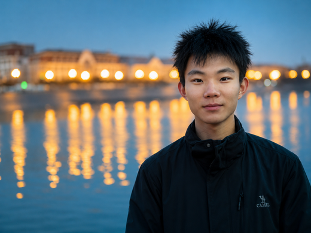

Xinyang Liao
About Me
I am a first-year EngD student at Xi'an Jiaotong University, supervised by Prof. Na Lu. I am also a research intern at the Safe & Trustworthy Center at Shanghai AI Lab, advised by Dr. Yan Teng. I received my B.E. degree from Xidian University.
My research focuses on Trustworthy AI, with an emphasis on improving the safety, robustness, and reliability of advanced AI systems. My current research interests mainly lie in two directions:
-
Foundation Model Safety
- alignment
- backdoor attacks & defenses
- AI safety evaluation
-
Agent Safety
- search agent
- deep/auto research agent (PseudoBench)

News
- 2026.09 Started my EngD program at Xi'an Jiaotong University.
- 2026.06 Our preprint PseudoBench was released on arXiv.
- 2024.11 Received the Special Prize (Top 2) in The 9th National Cryptography Technology Competition.
Publications
To be updated.
Preprints * Equal contribution.
Education
- 2026.09 - Present EngD in Control Engineering, Xi'an Jiaotong University, China.
- 2022.09 - 2026.06 B.E. in Cyberspace Security (Elite Class), Xidian University, China. GPA: 3.8/4.0.
Honors and Awards
- 2024.11 Special Prize (Top 2), The 9th National Cryptography Technology Competition.